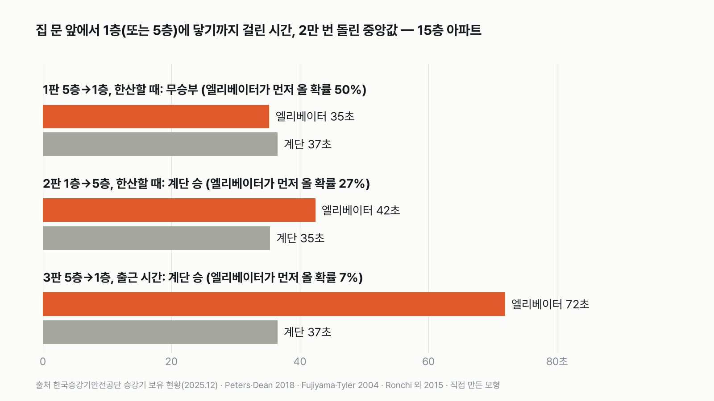
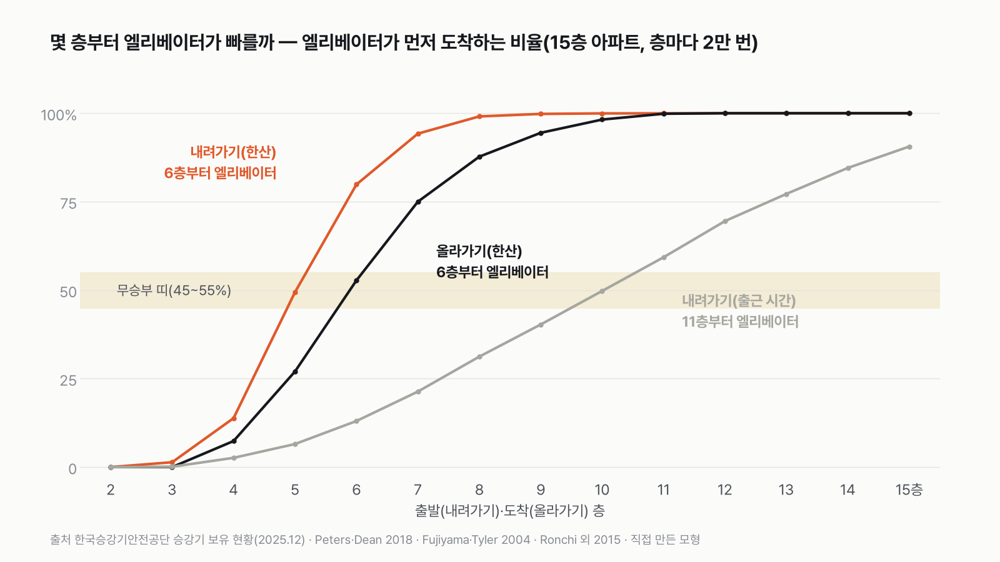
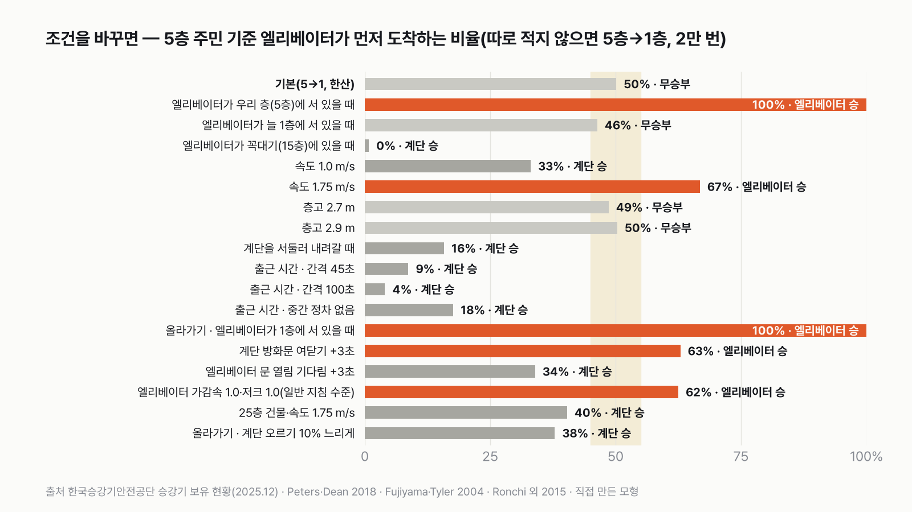
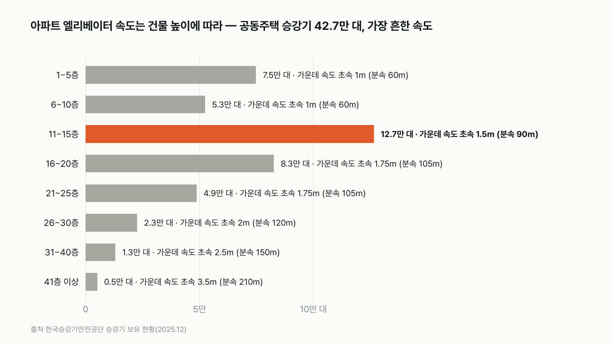

아파트 5층에 살면, 엘리베이터와 계단 중 뭐가 더 빠를까
결과를 보기 전에 먼저 골라 주세요. 투표하면 독자 예상과 데이터 결과를 나란히 보여 드려요.
- 아파트 5층에 살아요. 나갈 때도 들어올 때도, 엘리베이터 버튼을 누를까요, 계단 문을 열까요?
- 몇 층부터 엘리베이터가 빠른지, 올라갈 때와 출근 시간에는 어떻게 다른지도 따져 봤어요.
- 전국 아파트 엘리베이터 42만 대의 속도와 계단 걷기 측정 연구로 계산했어요. 투표하면 결과가 바로 아래에 열려요.
조건과 규칙
- 건물은 우리나라 아파트에서 가장 흔한 15층짜리예요. 엘리베이터 속도는 실제 15층 아파트에 깔린 엘리베이터들의 속도 비율대로 정해요.
- 엘리베이터는 문이 열리고 닫히는 시간, 타고 내리는 시간, 출발하고 멈출 때 천천히 움직이는 시간까지 넣어요. 엘리베이터가 어느 층에 서 있었는지에 따라 기다리는 시간이 달라져요.
- 계단은 보통 걸음으로 걸어요. 층 사이 계단참을 도는 시간도 넣어요.
- 한산한 낮에 내려가기, 한산한 낮에 올라가기, 출근 시간에 내려가기, 세 판으로 겨뤄요.
독자 투표
아파트 5층에 살면, 엘리베이터와 계단 중 뭐가 더 빠를까?
결과 요약
3판 계단 2승 1무 → 최종 계단 승(엘리베이터가 아무 층에나 서 있는 단지라면)
- 한산할 땐 동전 던지기, 출근길엔 계단 압승(72초 대 37초). 6층부터는 엘리베이터예요.
- 한산할 때 내려가기는 몇 초 차이로 갈리는 무승부예요. 올라가기는 엘리베이터가 1층에 얼마나 자주 서 있느냐에 달려 있어서, 단지에 따라 계단 승도 엘리베이터 승도 돼요.
- 아침 출근길엔 11층부터 엘리베이터가 앞서요.
그래서? 5층 이하면 계단, 6층부터는 엘리베이터. 아침 출근길엔 10층까지 계단. 집에서 월패드로 미리 불러 두거나 짐이 있으면 엘리베이터.
독자 예상 vs 데이터 결과
아파트 5층에 살면, 엘리베이터와 계단 중 뭐가 더 빠를까?
데이터로 보면 계단. 규칙대로 세면 계단 2승 1무. 한산할 땐 반반이고, 엘리베이터가 1층에 자주 서 있는 단지라면 무승부예요.


| 판 | 엘리베이터 | 계단 | 엘리베이터가 먼저 올 확률 | 승자 |
|---|---|---|---|---|
| 1판 5층→1층, 한산할 때 | 35초 | 37초 | 50% | 무승부 |
| 2판 1층→5층, 한산할 때 | 42초 | 35초 | 27% | 계단 |
| 3판 5층→1층, 출근 시간 | 72초 | 37초 | 7% | 계단 |
| 최종 | 3판 계단 2승 1무 → 계단 승 |
판마다 같은 경주를 2만 번 다르게 돌려 봤어요. 표의 시간은 그 가운데 딱 중간에 오는 값이고, 확률은 2만 번 가운데 엘리베이터가 먼저 도착한 비율이에요. 이 규칙과 가정이면 최종 승자는 계단이에요. 다만 이 판정은 엘리베이터가 15개 층 가운데 아무 층에나 똑같이 서 있다는 가정 위에 서 있어요. 이 가정을 바꾸면 결과가 달라져요.
1판 5층→1층, 한산할 때: 무승부(50%)
엘리베이터가 아무 층에나 서 있으면, 버튼을 누르고 엘리베이터가 와서 문이 열리기까지 중간값으로 15초가 걸려요. 그다음 타고, 문이 닫히고, 4개 층을 내려가고, 문이 열리고, 내리는 데 20초가 더 걸려요. 그 20초 가운데 엘리베이터가 실제로 움직이는 시간은 11초뿐이에요. 나머지 9초는 타고 내리고 문이 여닫히는 시간이에요. 합쳐서 35초예요.
계단은 한 층에 9초 남짓이에요. 계단을 내려가는 데 6초, 층 사이 계단참 두 곳을 도는 데 3초 안팎이에요. 4개 층이면 37초예요. 엘리베이터와 겨우 1~2초 차이라, 2만 번 가운데 엘리베이터가 먼저 도착한 게 딱 절반이었어요. 계산을 돌려 보기 전에는 엘리베이터가 넉넉히 이길 줄 알았는데, 동전 던지기가 나와서 저도 놀랐어요.
1판은 몇 초 차이로 갈려요. 계단 방화문을 열고 닫는 데 3초가 더 들면 엘리베이터가 이겨요(먼저 올 확률 63%). 엘리베이터 문이 열리길 3초 더 기다리면 계단이 이겨요(엘리베이터 34%). 엘리베이터가 이 글의 현장 측정값보다 빠르게 출발하고 멈추면(설계 지침에서 흔한 값) 엘리베이터가 이겨요(62%).


2판 1층→5층, 한산할 때: 계단 승(27%, 1층 로비에 엘리베이터가 없을 때)
올라갈 때는 계단이 느려져요. 한 층에 8~10초, 4개 층이면 35초예요. 엘리베이터도 느려져요. 1층에서 부르면 엘리베이터가 서 있던 층에서 1층까지 내려와야 하는데, 평균 거리가 5층에서 부를 때보다 멀어요. 그래서 엘리베이터 42초, 계단 35초로 계단이 이겨요.
그런데 이 승리는 1층 로비에 엘리베이터가 없을 때 이야기예요. 이 글의 기본 가정처럼 엘리베이터가 15개 층에 똑같이 흩어져 있으면 1층에 있을 확률은 15분의 1, 약 7%예요. 그런데 실제 아파트 엘리베이터는 사람들을 태우고 대부분 1층을 오가요. 내려간 엘리베이터는 1층에 남고, 1층으로 자동으로 돌아가게 맞춘 단지도 있어요. 그래서 1층에 서 있는 비중이 절반 가까이 되는 게 현실에 더 가까울 수 있어요. 비중이 약 30%면 2판은 무승부(45%), 약 53%면 엘리베이터 승(63%)이에요. 그러면 최종 판정도 1승 1무 1패, 무승부가 돼요.
| 엘리베이터가 1층에 서 있는 비중 | 1판 | 2판 | 3판 | 최종 |
|---|---|---|---|---|
| 약 7%(15개 층에 똑같이, 이 글의 기본) | 무승부(50%) | 계단(27%) | 계단(7%) | 계단 승 |
| 약 30% | 무승부(49%) | 무승부(45%) | 계단(6%) | 계단 승 |
| 약 53% | 무승부(48%) | 엘리베이터(63%) | 계단(7%) | 무승부 |
3판 5층→1층, 출근 시간: 계단 승(7%)
출근 시간에는 엘리베이터가 위층 사람들을 태우고 오가느라 우리 층에 오는 간격이 길어져요. 승강기 설계에서 아파트에 쓰는 기준 간격이 60초예요. 평균으로 그 간격의 60%를 기다리고, 내려가는 길에 다른 층에서 한두 번 더 서요. 그래서 엘리베이터는 72초, 계단은 그대로 37초예요. 엘리베이터 간격이 45초로 짧아도 엘리베이터가 먼저 올 확률은 9%, 내려가는 길에 한 번도 안 서도 18%예요. 출근 시간엔 어느 쪽으로 바꿔도 계단이에요.
몇 층부터 엘리베이터가 빠를까
한산할 때 내려가기는 6층부터 엘리베이터가 앞서요. 엘리베이터가 먼저 올 확률이 5층에서 반반, 6층에서 80%, 8층부터는 거의 100%예요. 올라가기도 6층부터(53%) 엘리베이터가 앞서요. 출근 시간에는 10층까지 반반을 못 넘고, 11층(59%)부터 엘리베이터가 앞서요.


가정을 바꾸면
가장 크게 흔드는 건 엘리베이터가 어디에 서 있느냐예요. 집에서 월패드로 미리 불러 두면, 나갈 때 엘리베이터가 우리 층에 서 있어요. 그러면 문만 열리면 돼서 23초, 엘리베이터가 늘 이겨요. 반대로 꼭대기 15층에 있으면 46초가 걸려 계단이 거의 늘 이겨요. 나가기 전에 층 표시판을 보거나 미리 불러 두는 게 가장 쓸모 있는 방법이에요.
엘리베이터 속도도 판을 바꿔요. 1초에 1m짜리면 계단이 이기고(33%), 1.75m짜리면 엘리베이터가 이겨요(67%). 층 높이를 2.7m나 2.9m로 바꿔도 결과는 반반 그대로였어요. 계단과 엘리베이터가 같은 높이를 함께 가니까 서로 상쇄돼요. 계단을 서둘러 내려가면 30초로 줄어 계단이 이기고, 계단 오르기가 이 글의 값보다 10% 느리면 2판은 그래도 계단이에요(엘리베이터 38%). 25층 건물(엘리베이터 1.75m)이라면 엘리베이터가 서 있을 수 있는 층이 늘어나 5층 주민에게는 계단이 이겨요(엘리베이터 40%).


엘리베이터 속도는 건물 높이를 따라가요
전국 공동주택 엘리베이터 42.7만 대를 건물 층수별로 나눠 봤어요. 5층 이하 건물은 96%가 1초에 1m예요. 11~15층은 1.5m와 1m가 섞여 있고, 16~25층은 1.5~1.75m가 흔해요. 높은 건물일수록 빨라서, 41층 이상은 1초에 3.5m가 가운데 값이에요.
어떤 가정을 넣어도 버티는 결론은 이거예요. 한산할 땐 동전 던지기, 출근길엔 계단 압승(72초 대 37초), 6층부터는 엘리베이터. 계산 전에 정한 규칙대로 세면 계단 2승 1무지만, 엘리베이터가 1층에 자주 서 있는 단지라면 무승부예요.
이 숫자는 어디서 왔나요
출처
기준일 승강기 보유 현황은 2025년 12월 31일 기준(2026년 11월 8일 받음)이에요. 조건은 2026년 11월 8일, 계산하기 전에 정했어요.
한국승강기안전공단
- 국내 승강기 보유 현황(2025.12.31, 공공데이터포털 15017366)
공동주택 엘리베이터 427,215대의 건물 층수·속도
Peters·Dean 2018
- 엘리베이터 교통 설계값 (9th Symposium on Lift & Escalator Technologies)
문 열림·닫힘, 타고 내리기, 가속도, 주거 설계 간격 60초
Smith 2012
- 기다리는 시간 계산 (Symposium on Lift & Escalator Technologies)
실제 평균 대기 ≈ 간격의 60%
Fujiyama·Tyler 2004, 런던대
- 계단 걷는 속도 (UTSG 2004)
성인 보통 걸음 계단 내려가기·오르기 속도
Ronchi 외 2015
- 긴 계단 오르기 (Lund University TVBB-3192)
층마다 오르는 속도, 계단참 포함
주택건설기준 등에 관한 규정
- 계단 단높이·단너비 기준
공동주택 계단 단높이 18cm 이하, 단너비 26cm 이상
어떻게 셌나요
- 엘리베이터 속도: 한국승강기안전공단의 「국내 승강기 보유 현황」(2025년 12월 31일)에서 공동주택에 있는 사람이 타는 엘리베이터 427,215대를 뽑았어요. 15층 건물 엘리베이터의 속도 비율(1초에 1.5m 49%, 1m 40%, 1.75m 10%)대로 2만 번 뽑았어요.
- 엘리베이터 움직임: 주거용 엘리베이터를 현장에서 잰 값을 정리한 승강기 설계 논문(Peters·Dean 2018)을 따랐어요. 출발과 멈춤 때 1초마다 속도가 0.6m씩 붙거나 줄어드는 움직임, 출발 지연 0.5초, 옆으로 열리는 문이 열리는 데 2.5초·닫히는 데 3.0초, 한 사람이 타거나 내리는 데 1.5초예요. 이 값들로 5층→1층(11.2m)을 1초에 1.5m로 가면 움직이는 시간이 11.5초예요.
- 기다리는 시간(한산할 때): 엘리베이터가 15개 층 가운데 아무 층에나 같은 확률로 서 있다고 봤어요. 그 층에서 우리 층까지 오는 시간과 문이 열리는 시간을 더했어요.
- 기다리는 시간(출근 시간): 아파트 설계 기준 간격 60초를 쓰고, 기다리는 시간은 0초에서 72초 사이로 고르게 뽑아 평균이 간격의 60%가 되게 했어요(Smith 2012). 내려가는 길에 다른 층에서 0~2번 서고, 설 때마다 문 열림·타기·닫힘·출발 지연과 멈췄다 다시 가는 손실을 더했어요.
- 층 높이: 법으로 정한 기준이 없어 2.8m로 두고, 2.7m·2.9m도 돌려 봤어요.
- 계단 내려가기: 계단 높이 17.5cm·폭 25cm 계단에서 잰 성인 보통 걸음(Fujiyama·Tyler 2004)을 썼어요. 위아래로 1초에 0.46m 내려가요. 사람마다 ±15% 차이를 두고, 층마다 계단참 두 곳을 도는 2~4초를 더했어요.
- 계단 오르기: 우리 법정 기준과 같은 18cm·26cm 계단을 13층까지 오르게 한 실험(Ronchi 외 2015)의 가운데 값을 썼어요. 1층에서 1초에 0.36m, 4층부터 0.28m로 느려져요. 계단참을 도는 시간이 이미 들어 있어요. 이 실험은 층고 3.7m 건물에서 대피하듯 오르게 한 거라, 평소 걸음보다 빠르게 잡혔을 수 있어요. 10% 느리게 해도 2판 판정은 같았어요.
- 집 문에서 엘리베이터 문과 계단 문까지 걷는 거리는 같다고 봤어요.
한계 6가지
이 데이터로 말할 수 없는 것
- 짐을 들었거나, 집 문에서 계단까지와 엘리베이터까지 거리가 다르면 결과가 달라져요. 짐이 있으면 엘리베이터가 유리해요.
- 아파트마다 엘리베이터 대수가 달라요. 한 라인에 엘리베이터가 두 대면 기다리는 시간이 줄어 엘리베이터가 유리해져요. 이 글은 한 대를 기준으로 했어요.
- 출근 시간의 간격(60초)과 기다리는 시간 비율은 승강기 설계 기준값이에요. 우리 아파트 아침 대기 시간을 직접 잰 국내 자료는 찾지 못했어요.
- 엘리베이터가 꽉 차서 그냥 지나가는 경우는 넣지 않았어요. 넣으면 출근 시간 엘리베이터가 더 느려져요.
- 계단 속도는 외국 실험 값이에요. 무릎이 불편하거나 짐이 많으면 계단은 훨씬 느려져요.
- 층 높이 2.8m는 기준이 없어 고른 값이에요. 2.7~2.9m에서는 결과가 같았어요.
새 글 나오면 받아 보기
피드 리더 앱에 이 사이트 주소를 한 번 넣어 두면, 새 글이 올라올 때 앱에 떠요. 가입이나 메일 주소는 필요 없어요.
받는 법 보기
- 피드 리더 앱을 하나 골라요. 새 글을 모아 보여 주는 앱이에요. 예를 들면 Feedly나 Inoreader가 있어요. 둘 다 무료고 웹·휴대폰에서 써요.
- 앱에서 '구독 추가'(+)를 누르고 아래 주소를 붙여 넣어요.
- 끝이에요. 새 글이 올라오면 앱 목록에 떠요.
https://protofu.github.io/opendata-insight/feed.xmlFeedly를 쓴다면 여기를 눌러 바로 추가할 수도 있어요.